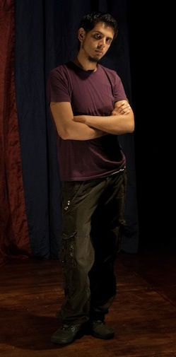
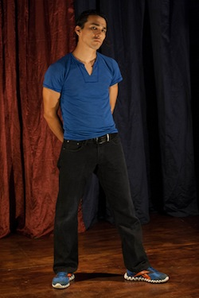

Con una ambientación entre blancos y tonos pastel de una cafetería, un delicioso detalle para los asistentes y una interesante propuesta teatral, la comedia que presenta la compañía independiente Ánthrōpos Teatro, nos invita a disfrutar de una historia donde la sorpresa es el platillo principal. Los personajes y sus conflictos, sus estrategias y sus desenlaces nos permitirán reírnos de seres aparentemente ajenos a nosotros, pero profundamente cercanos a nuestra naturaleza humana.
En momentos de desesperación solemos tomar decisiones apresuradas, decisiones que ponen en riesgo ciertos aspectos de nuestra vida. Casi nunca nos reímos de este tipo de situaciones cuando nos suceden a nosotros, sin embargo, la comedia teatral permite ver desde una perspectiva renovada los conflictos que todos como seres humanos tenemos en algún momento de nuestra vida, y de esta forma nos permitimos a nosotros mismos reírnos de nuestros tropiezos e incluso no volver a cometerlos.
Con personajes interesantes, caracterizaciones únicas, una escenografía cuidada hasta el último detalle y sobre todo una entrega total por parte del equipo, la llamada comedia romántica de terror Huesos y corazones rotos, se sigue presentando con el fin de que el público xalapeño asista a una velada emocionante y entretenida programada exclusivamente para la diversión.
Sinopsis
Un escritor frustrado que busca publicar su único libro, una actriz sin escrúpulos cuyo único objetivo es la fama y el dinero, un multimillonario corrupto con un secreto peligroso, un asesino arrepentido y un fantasma redentor, son los personajes de esta comedia en la que cada uno hará un viaje desde la inmediatez del mundo y sus banalidades, hasta una transformación definitiva que les demostrará que las decisiones que tomamos afectan nuestro destino, el destino de los demás y el propio devenir del universo.
Basada en una interesante combinación del cine humorístico de Woody Allen con el tratado sombrío de las historias de Tim Burton, esta, llamada, comedia romántica de terror explora el lado más humano de sus personajes, quienes se ven envueltos en una serie de conflictos amorosos, criminales y espirituales, en los que tendrán que echar mano de las complicidades más oscuras, los chantajes más sórdidos y su propia miseria con el fin de descubrir si su objetivo en la vida es el correcto, o deben tomar decisiones dolorosas pero conciliadoras consigo mismos y sus víctimas.
Esta obra es la ópera prima del actor y director Jair Torres Baizabal, quien forma parte de la Compañía Titular de Teatro de la U.V. (ORTEUV), desde marzo del año pasado y creó, junto con su colaborador Adán Miguel Sánchez Álbert, la productora teatral Ánthrōpos con el fin de llevar a escena obras teatrales innovadoras. El montaje incluye la participación de actores de gran calidad como Gabriela Martínez, Jorge Arturo Torres, Hiram Torres, Giovanni Rosas y Medea Herrerías.
Jair Torres

Licenciado en Música con opción en canto por la Universidad Veracruzana desde el año 2011, bajo la tutela de la Maestra Guadalupe Colorado.
Su mayor influencia artística ha sido el maestro y director de teatro Abraham Oceransky, con quien ha trabajado en diversos montajes como El nacimiento viviente, Doble suicidio, El tuerto es rey, La aparición y Poder y Pasión.
Ha trabajado con directores de la talla de Abraham Oceransky, Alberto Lomnitz, Boris Shoemann, Clarissa Malheiros, Raúl Santamaría, Constanza Alfaro, Roberto Benítez, Jorge Castillo, Andrea Kramer (Alemania) Dimitris Kourubalis (Grecia), Cezaris Grauzinis (Lituania).
En 2011 entra a formar parte de la Compañía Titular de Teatro de la U.V., de la ORTEUV, con la que ha llevado a cabo los montajes Bintou, En medio del mar salado e Idiotas contemplando la nieve.
Como parte de su actividad dentro de la ORTEUV, ha sido seleccionado para participar en el proyecto internacional MYBE Project, organizado por el director griego Dimitris Kourobalis, como resultado de una beca de la unión europea (mybe.gr). Como parte de dicho proyecto realizó una primera residencia artística en Grecia del 18 de mayo al 2 de julio de 2012 culminando con el montaje To telos toi kosmoi, y una segunda residencia artística en Lituania del 8 al 31 de agosto de 2012, culminando con el montaje Pasaulio Pabaiga.
Jorge Torres
Nació en Coatepec el 29 de abril de 1980. Egresado de la Facultad de Teatro de la Universidad Veracruzana. Ha sido actor en montajes como “Así es la vida”, “Relaciones Peligrosas”, “Es que somos muy pobres” y “Macbeth” bajo la dirección de Roberto Benítez, representando con las últimas dos, a la Universidad Veracruzana en el Festival de la Alianza Global de Escuelas de Teatro en Beijing, China. También colaboró en “Big Bang Wrong Hole”, escrito y dirigido por el maestro Manuel Domínguez, y fue director y actor en el montaje independiente titulado “Horacio amigo de Hamlet”, original de Matías Martínez.
En la actualidad, paralelamente a “Huesos y corazones rotos”, participa en el proyecto televisivo “Se reciben pupilos”, una producción de Televisión Universitaria de la Universidad Veracruzana, bajo la dirección del maestro Jorge Castillo.
Gabriela Martínez
Nace en Xalapa, Veracruz. Inicia sus estudios de Teatro en el año 2000 bajo la tutela del Maestro y Director Enrique Espinosa, participando montajes como El fandango de los muertos (2001), Un día nublado en la casa del sol (2002), Navidad para ardidos (2002), Los hilos de la trama (2003), El mundo nocturno (2004), Higinio (2006), ¿Calaca yo? (2006).
Ingresa a la facultad de Teatro de la Universidad Veracruzana en el año 2003, participando en montajes como El cerdito de oro dirigida por Bryant Caballero (2003), Ni ranas ni sapos dirigida por Roberto Benítez (2004), La cueva de Salamanca dirigida por Ramiro Sotelo (2007), La Ginecomaquia dirigida por Karen Utrera (2008), El sueño del Ángel dirigida por William Villatoro (2008), Esperando a Godot dirigida por Giles Hogia (2008).
Termina sus estudios de Teatro en la facultad de Teatro de la Universidad Veracruzana en 2009. Participa en montajes como Poder y pasión (2010) y Cuentos de Aguinaldo (2011) bajo la direccion del Maestro Abraham Oceransky.
Actualmente labora como Actriz en la Compañía de Teatro infantil de la Secretaria de educación de Veracruz (TISEV) y forma parte de la Compañía de Teatro Ánthrōpos.
Hiram Torres
Egresado de la BENV, “Enrique C. Rébsamen”. Es maestro de Educación Primaria en Coatepec, en donde imparte Educación Artística.
Fue miembro del Taller de Ópera de la Facultad de Música de la Universidad Veracruzana de 2003 a 2008, bajo la dirección de la maestra Guadalupe Colorado, participando en Las bodas de Fígaro, Thaïs, La flauta mágica y Carmen.
Participó en el Festival Internacional Junio Musical 2007 con la ópera El secreto de Susana. En 2008 actuó en el cortometraje Memoria, lugar común, de Imelda García. Ha tomado talleres de formación teatral con Raúl Santamaría, Jair Torres, Fernando Soto y Tania Hernández y ha trabajado bajo la dirección de la maestra Constanza Alfaro, Raúl Santamaría y Gregorio Trejo.
Actualmente forma parte de los grupos, Anthrōpos, en donde participa en el montaje Huesos y corazones rotos y Febrero 10 Teatro, con Sueños para volar.
Medea Herrerías
Nace el 29 de enero de 1990 en Tijuana, Baja california. A la edad de 17 años toma el taller de locución “Introducción para radialistas culturales” y comienza trabajar en los programas juveniles “Voz Joven” y “Oferta 2x1” en la estación comunitaria “Radio Tepoztlán”.
A los 19 años se muda a la ciudad de Xalapa Veracruz e incursiona en el mundo del teatro siendo seleccionada para trabajar dentro la compañía de teatro de Abraham Oceransky en los montajes “La aparición” y “El nacimiento viviente”, además de continuar su formación actoral en talleres de actuación y dirección con el mismo.
Actualmente se encuentra estudiando la licenciatura en Antropología Social y forma parte de la compañía de teatro independiente Ánthropos.
Giovanni Rosas

Nace en Xalapa, Veracruz el 25 de abril de 1984, estudió Ciencias y Técnicas de la Comunicación en la Universidad de Xalapa. Inicia su trayectoria escénica en el 2005.
En su labor como actor de teatro destaca su trabajo en diversas compañías y grupos teatrales tales como: La compañía de teatro ¡Así le dijeron a mi hermana…! bajo la dirección de Hugo López, con el musical “¿Te acuerdas Agustín?” presentado en el 2006 en Tlacotalpan, Veracruz. La obra “La señora en balcón” de Elena Garro (2006-2007), presentada en diversos espacios se la ciudad de Xalapa y en el Coloquio Internacional de Elena Garro en la ciudad de México.
Al mismo tiempo colabora como actor y asistente de dirección con la compañía de teatro para el medio ambiente Ajonjolí Teatro con obras para niños como “El señor del bosque” (2007), “chipi chipi y su camino al bosque que crece en el agua” (2009).
Otra de sus participaciones relevantes se encuentra con la compañía Teatro estudio “T” colaborando como actor en “El Nacimiento viviente” (2007-2012) y la obra de teatro musical “la Aparición” (2009-2010) ambas dirigidas por el reconocido maestro Abraham Oceransky.
Para el 2009 participa como actor en la obra de teatro íntimo “Sol a medio cielo” Ganadora del Premio a Mejor Obra Teatral del Sexto Concurso de Teatro en la Alacena, con la dirección de la compañía Mundo en Ensayo y producida por José Pastor, con más de 50 representaciones en este año.